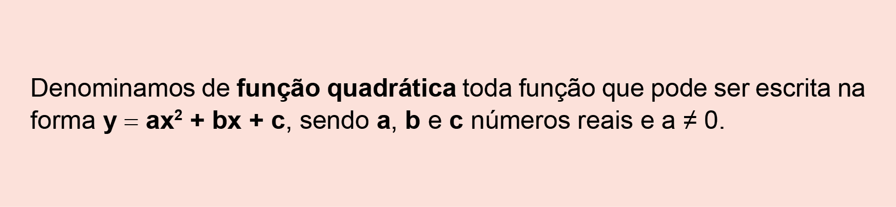

Congresso Nacional. Brasília, DF, 2014.
Brasília é a capital federal do Brasil e a sede do governo do Distrito Federal. A cidade está localizada na região Centro-Oeste do país, ao longo da região geográfica conhecida como Planalto Central, e está a aproximadamente 210 km de Goiânia, capital do estado de Goiás.
Funções
Eurritimia / Flickr
converse
1. Uma pessoa que mora em Goiânia e quer visitar Brasília, indo de carro com uma velocidade constante de 70 km/h, levará quanto tempo para percorrer a distância entre as duas cidades?
2. Conhecendo-se a velocidade média do veículo, como podemos calcular o tempo de viagem?
3. Nesse caso, quais as variáveis envolvidas na situação?
Catedral Nossa Senhora Aparecida. Brasília, DF, 2014.
Eurritimia / Flickr
Sistema de coordenadas
Os mapas em geral, o sistema GPS e os gráficos são baseados no sistema de coordenadas cartesianas, idealizado pelo matemático René Descartes (1596-1650). Além de grande filósofo, René Descartes foi também um destacado matemático. Viveu a maior parte de sua vida na Holanda, onde produziu vários escritos, entre eles La Géométrie (A geometria) que foi a sua única publicação matemática.
Nessa obra, Descartes mostrou como duas retas numéricas perpendiculares, chamadas de eixos que geralmente são indicados por eixo x (eixo das abscissas) e eixo y (eixo das ordenadas), formam um plano chamado de plano cartesiano. Esse sistema hoje é conhecido como sistema de coordenadas cartesianas, em homenagem a seu criador. Nesse plano, cada ponto pode ser identificado por um par ordenado P (x, y).
Distância entre dois pontos
Quando consideramos dois pontos, A e B, representados em um plano cartesiano, podemos indicar por d(A, B) como a medida da distância entre eles. Observe como podemos fazer para calcular essa medida.
O segmento de reta que os une é paralelo ao eixo x
Quando a distância entre dois pontos, representada pelo seguimento de reta é paralelo ao eixo x, podemos calcular a sua medida de forma simples. Observe:
d(A, B) = xB - xA = 5 - 2 = 3 unidades de medida de comprimento. Neste caso, subtraímos as abscissas dos pontos: a maior menos a menor.
O segmento de reta que os une é paralelo ao eixo y
d(A, B) = yB - yA = 5 - 1 = 4 unidades de medida de comprimento. Neste caso, subtraímos as ordenadas dos pontos: a maior menos a menor.
Distância entre 2 pontos quaisquer
Um modo de descobrir a distância entre os pontos A e B é desenhar os segmentos  e
e  , de tal modo que formem o triângulo retângulo ABC:
, de tal modo que formem o triângulo retângulo ABC:
Podemos determinar as medidas dos segmentos = 5 - 2 = 3 e = 5 - 1 = 4.
Agora, aplicamos o teorema de Pitágoras, para obter  :
:
AB2 = AC2 + BC2
AB2 = 32 + 42
AB2 = 9 + 16
AB2 = 25
AB = 5 unidades de medida de comprimento.
Coordenadas do ponto médio de um segmento de reta
O ponto médio divide um seguimento de reta em dois segmentos congruentes. Chamaremos de M o ponto médio do seguimento de reta .
Podemos dizer que o ponto médio M de um segmento de reta tem coordenadas:
Distâncias entre dois pontos e o ponto médio de um segmento

Imagens: © Pedro Martins
- 1
6
5
4
3
2
1
0
y
1
2
A
3
4
5
B
6
x
- 1
6
5
4
3
2
1
0
y
1
2
B
A
3
4
5
6
x
- 1
6
5
4
3
2
1
0
y
1
2
A
3
4
5
B
6
x
- 1
6
5
4
3
2
1
0
y
1
2
A
3
4
5
B
C
6
x
Encontre soluções

?? e se cruzam no ponto P. Determine as coordenadas do ponto P, sabendo que A(0, 6), B(3, 0), C(1, 0) e D(3, 4). - 1
6
5
4
3
2
1
0
y
1
2
A
3
4
5
B
6
x
M

Vistas ortogonais
As áreas da construção e da metalúrgica utilizam um recurso para representar as construções ou as peças que serão feitas. Normalmente, os desenhos apresentam três vistas de um objeto e esse recurso é chamado de vista ortogonal. Cada vista é uma projeção ortogonal de um objeto tridimensional em três planos perpendiculares.
Veja um exemplo:
Um objeto representado em perspectiva pode esconder alguns detalhes importantes da peça. Observe o exemplo:
Na forma que está representado não podemos saber o que há no meio da peça. Assim, precisamos de mais uma vista:
A projeção ortográfica é uma forma de representar graficamente objetos tridimensionais em superfícies planas, como um quadro ou uma folha de papel.
Observe agora como são as projeções ortogonais em 3 planos perpendiculares do objeto proposto no início do capítulo:
Vista frontal
Vista lateral esquerda
Vista superior
Sergey Mironov/Freepik
Encontre soluções


Vista lateral direita
Sérgio Bonfim dos Santos
Sérgio Bonfim dos Santos
Pirâmide de base quadrada
Esfera
Cilindro
Paralelepípedo retângulo
Imagens: Sérgio Bonfim dos Santos
Desenhos em perspectiva
Durante a história da humanidade tentamos representar os objetos e as situações que vivenciamos através de desenhos. Um exemplo é a arte rupestre, na qual as criações artísticas eram feitas em rochas durante a Pré-História.
Já no Antigo Egito, os egípcios utilizavam uma técnica de desenho geometrizado e bidimensional, geralmente suas pinturas eram acompanhadas de hieróglifos.
Logo, muitas outras técnicas foram criadas e com isso foi desenvolvido o estudo da perspectiva, o que possibilitou a muitos artistas representar paisagens com ideia de profundidade.
Um dos primeiros pintores a desenvolver a técnica da perspectiva foi o italiano Giotto di Bondone (1276-1337), Giotto é considerado o precursor da pintura renascentista. Mais recente, Maurits Cornelis Escher (1898-1972) gostava de representar o que é tridimensional, em um plano bidimensional, como a folha de papel.
Essa técnica também é usada frequentemente em projetos arquitetônicos. Observe:
Existem diferentes técnicas de desenho em perspectiva, dentre as principais: isométrica, cavaleira e cônica.
Agora, observe a fotografia a seguir.
Nela podemos ter uma ideia de como é a representação de um efeito da perspectiva cônica. Nessa técnica podemos notar um ponto de fuga sobre uma linha, chamada de linha do horizonte.
Um desenho pode ter um ou mais pontos de fuga e, geralmente, é utilizado quando uma parte lateral do objeto a ser desenhado encontra-se diretamente em frente ao observador.
Vamos representar um cubo em perspectiva:


Arte rupestre no Parque Nacional da Serra da Capivara. João Costa, PI, 2018.
Nebamun caçando nos pântanos. Tumba-capela de Nebamun, c. 1350 a.C., 18.ª Dinastia, pintura em gesso, 83 x 98 cm, Tebas. Museu Britânico, Londres, Inglaterra.
Paula Sacchetta/The Summer Hunter
© Trustees of the British Museum


Coleção Cornelius Van S. Roosevelt/Galeria Nacional de Arte
ESCHER, Maurits Cornelis (1898-1972). Galeria, 1946. Mezzotint, 21,59×16,51 cm. folha: 32,07×25,72 cm. Coleção Cornelius Van S. Roosevelt, Galeria Nacional de Arte, Washington, EUA.
S.I./Pngwing

Scott/Adobe Stock
Considere que um marceneiro tenha encontrado algumas figuras supostamente desenhadas por Escher e deseje construir uma delas com ripas rígidas de madeira que tenham o mesmo tamanho. Qual dos desenhos a seguir ele poderia reproduzir em um modelo tridimensional real?


Encontre soluções

Reprodução/Enem 2007
Leonardo e Isabel estão noivos e desejam se casar em breve. Antes, porém, eles pretendem construir uma casa para morar. Para isso, foram a um loteamento onde havia apenas três terrenos disponíveis para venda.
|
Terreno |
Dimensões |
Área |
Valor |
|
3 |
13 m × 40 m |
520 m2 |
R$ 130.000,00 |
|
7 |
12 m × 40 m |
480 m2 |
R$ 120.000,00 |
|
9 |
14 m × 42 m |
588 m2 |
R$ 147.000,00 |
O preço e a área são as duas grandezas envolvidas nessa situação. Podemos perceber que o preço do terreno tem uma relação de dependência com sua área. Assim, o valor do preço do terreno está em função da sua área. Em que:
Representando essa situação em linguagem matemática, temos:
y = 250x
O preço (y) está em função do valor da área (x). Assim, y = 250x é a lei de formação dessa função.

Reinaldo Rosa / Acervo da Editora.
Observe outra situação a seguir.
Fernanda chamou um táxi para levá-la até o aeroporto. Ao entrar no automóvel, o motorista ligou o taxímetro, que iniciou a bandeirada com um valor de R$ 3,50.
O preço e a quantidade de quilômetros percorridos são as grandezas envolvidas nessa situação. Podemos perceber, nesse caso, que o preço da corrida tem uma relação de dependência com o total de quilômetros rodados. Assim, temos que o valor da corrida está em função da distância percorrida. Em que:
Vamos representar em uma tabela alguns valores a serem pagos em função da distância percorrida. Observe:
|
Distância percorrida (km) |
Valor a ser pago (R$) |
|
2 |
3,50 + 2 . 2 = 7,50 |
|
4 |
3,50 + 2 . 4 = 11,50 |
|
9 |
3,50 + 2 . 9 = 21,50 |
|
13 |
3,50 + 2 . 13 = 29,50 |
|
19 |
3,50 + 2 . 19 = 41,50 |
Quanto custa a
corrida de táxi?
O preço (y) está em função da distância (x) percorrida em quilômetros.
Assim, y = 3,50 + 2x é a lei de formação dessa função.
Custa 3 reais e 50 centavos a bandeirada mais 2 reais por quilômetro rodado.
Reinaldo Rosa / Acervo da Editora.
Outra forma de representar os dados da tabela é por meio de diagramas. Observe:
No conjunto A, temos os valores que correspondem à distância percorrida. No conjunto B, os respectivos valores a serem pagos de acordo com a distância percorrida. Nesse caso, temos uma função de A em B que representamos por:
Por meio da lei de formação, podemos atribuir valores para x e encontrar o valor de y correspondente, obtendo assim um par ordenado.
|
x |
y |
Par ordenado (x; y) |
|
2 |
7,50 |
(2; 7,50) |
|
4 |
11,50 |
(4; 11,50) |
|
9 |
21,50 |
(9; 21,50) |
|
13 |
29,50 |
(13; 29,50) |
|
19 |
41,50 |
(19; 41,50) |
Observe alguns exemplos onde as situações apresentadas não representam uma função.
Encontre soluções
A situação apresentada não representa uma função, pois há um elemento (x) no conjunto A que não possui elemento (y) correspondente no conjunto B.
A situação apresentada não representa uma função, pois há dois valores de y em B para um único valor de x em A.
|
Tempo |
Valor |
|
Até 1 hora |
R$ 30,00 |
|
2 horas |
R$ 50,00 |
|
3 horas |
R$ 70,00 |
|
4 horas |
R$ 90,00 |
|
5 horas |
R$ 110,00 |

|
Tempo (t) |
0,5 |
1 |
1,5 |
2 |
3 |
7 |
|
Distância (d) (em quilômetros) |
80 |
MODELO
Gráficos de funções
Os gráficos podem nos auxiliar a analisar a variação das grandezas em determinadas situações.
O gráfico a seguir representa o valor a ser pago pelo estacionamento de um automóvel em função do tempo de permanência no local. As frações de horas são cobradas de forma proporcional.
Observe outra situação.
Uma pedra é lançada do solo para cima e descreve a curva representada no gráfico a seguir.
altura (metros)
90
80
70
60
50
40
30
20
10
0
1
2
3
4
tempo (segundos)
5
6
7
8
9
2. Troque ideias com um colega e respondam no caderno:
Construção de gráficos de funções
Vamos verificar agora como construir o gráfico que representa uma função dada.
Situação 1
Sendo x um número real, construa um gráfico para a função y = 3x - 2.
Inicialmente, vamos construir uma tabela e atribuir valores para x, que serão escolhidos de forma arbitrária dentro do conjunto dos números reais. Dessa forma, obteremos os respectivos valores de y pela função dada.
O gráfico será representado pelo conjunto de todos os pares ordenados (x, y), com e y = 3x - 2 no plano cartesiano.
Após encontrar os pares ordenados, devemos marcar os pontos encontrados no plano cartesiano e uni-los.
Note que o gráfico que representa a função é uma reta. A reta que representa essa função é formada por infinitos pares ordenados, pois x pode ser qualquer número real.
No ponto em y = 0, temos que x =  . Esse valor de x é denominado de zero da função. Note que representa o valor de x quando a reta intersecta o eixo das abscissas.
. Esse valor de x é denominado de zero da função. Note que representa o valor de x quando a reta intersecta o eixo das abscissas.
Situação 2
Sendo x um número real, construa um gráfico para a função y = x2 - 2x - 3.
Inicialmente, vamos construir uma tabela, atribuindo valores para x e calculando o y correspondente pela função dada.

Observe que o gráfico da função não é representado por uma reta. A curva que representa essa função denomina-se parábola.
Nesse caso, a função apresenta como zeros da função x = -1 e x = 3, que são os pontos da parábola em que y = 0.
Encontre soluções


De acordo com o gráfico, responda:

De acordo com o gráfico, responda:
Dos gráficos a seguir, o que representa o preço m pago em reais pela compra de n quilogramas desse produto é:
Função afim
Um automóvel, com velocidade constante, percorre 90 km a cada uma hora.
O gráfico que vocês construíram representa a distância percorrida em função do tempo. A função que relaciona a distância percorrida em função do tempo é um exemplo de função afim.
Em uma função afim, x pode assumir qualquer número real e o gráfico dessa função é uma reta, sendo que a corresponde ao coeficiente de x e b é o termo independente.
Veja alguns exemplos de funções afins:
Análise e construção do gráfico de uma função afim
Situação 1
Dado y = x + 3, com , vamos construir o gráfico dessa função e analisá-lo.
Análise do gráfico
Situação 2
Dada a função y = -x + 2, com , vamos construir o gráfico dessa função e analisá-lo.
Análise do gráfico
1,75
m
1
n
1,75
m
1
n
MODELO
MODELO
MODELO
1,75
m
1
n
1,75
m
1
n
1,75
m
1
n
Encontre soluções

Função quadrática
Observe o quadrilátero a seguir:
Esse quadrilátero possui duas diagonais.
O número de diagonais (d) de um polígono qualquer pode ser calculado em função do número (n) de lados desse polígono, veja:
Como exemplo, vamos calcular o número de diagonais de um octógono.
O octógono é um polígono que possui 20 diagonais.
Esse processo utilizado para calcular o número de diagonais em função do número de lados de um polígono é um exemplo de função quadrática.

Em uma função quadrática, x pode assumir qualquer número real e o gráfico dessa função é uma parábola, sendo que a e b correspondem aos coeficientes de x2 e x, respectivamente, e c é o termo independente.
Veja alguns exemplos de funções quadráticas:
Análise e construção do gráfico de uma função quadrática
Situação 1
Dada a função y = -x2 + 2x + 3, com , vamos construir o gráfico dessa função e analisá-lo.
Análise do gráfico
O valor da ordenada do vértice da parábola pode ser obtido substituindo-se o valor de x na função dada.
y = -x2 + 2x + 3
y = -(1)2 + 2 ∙ (1) + 3
y = -1 + 2 + 3
y = 4
Portanto, as coordenadas do vértice são (1, 4).
Situação 2
Dada a função y = x2 - 4x, com , vamos construir o gráfico dessa função e analisá-lo.
Análise do gráfico
O valor da ordenada do vértice da parábola pode ser obtido substituindo-se o valor de x na função dada.
y = x2 - 4x
y = (2)2 - 4 ∙ (2)
y = 4 - 8
y = -4
Portanto, as coordenadas do vértice são (2, -4).
Situação 3
Dada a função y = x2 - 2x + 5, com , vamos construir o gráfico dessa função e analisá-lo.

Análise do gráfico
O valor da ordenada do vértice da parábola pode ser obtido substituindo-se o valor de x na função dada.
y = x2 - 2x + 5
y = (1)2 - 2 ∙ (1) + 5
y = 1 - 2 + 5
y = 4
Portanto, as coordenadas do vértice são (1, 4).
Situação 4
Dada a função y = -x2 + 2x - 1, com , vamos construir o gráfico dessa função e analisá-lo.

Análise do gráfico
O valor da ordenada do vértice da parábola pode ser obtido substituindo-se o valor de x na função dada.
y = -x2 + 2x - 1
y = -(1)2 + 2 ∙ (1) - 1
y = -1 + 2 - 1
y = 0
Portanto, as coordenadas do vértice são (1, 0).
Encontre soluções
Probabilidade e estatística


Qual deve ser o aumento na receita da empresa para que o lucro mensal em 2014 seja o mesmo de 2013?
Em que dia dessa semana a quantidade total de bactérias nesse ambiente de cultura foi máxima?

O valor total gasto, em reais, para postar essas cartas é de
O cruzamento da quantidade de horas estudadas com o desempenho no Programa Internacional de Avaliação de Estudantes (Pisa) mostra que mais tempo na escola não é garantia de nota acima da média.

Dos países com notas abaixo da média nesse exame, aquele que apresenta maior quantidade de horas de estudo é

Fonte: Agência Brasil. Disponível em: https://agenciabrasil.ebc.com.br/economia/noticia/2020-05/estudo-mostra-menos-gasto-de-agua-para-gerar-mais-riqueza-na-economia. Acesso em: 22 fev. 2022.
relembrE
A torre deve estar situada em um local equidistante das três antenas.
O local adequado para a construção dessa torre corresponde ao ponto de coordenadas:

Essa pessoa pretende gastar exatamente R$ 30,00 por mês com telefone. Dos planos telefônicos apresentados, qual é o mais vantajoso, em tempo de chamada, para o gasto previsto para essa pessoa?
Notas no Pisa e carga horária (países selecionados)*